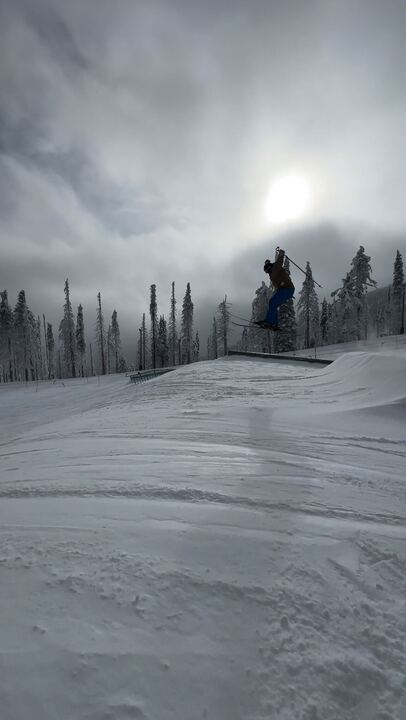

Things I enjoy doing in my free time!
In my free time I enjoy cruising back roads with my friends and exploring. I have made many new friends through riding and really enjoy the feeling of freedom it brings when I am on my motorcycle!

Another activity I like doing when it is not riding season is going up to the mountain to ski. I learned to ski when I was 7 years old with my grandpa. I love going to Mt. Spokane and would love to go to Schweitzer in Sandpoint Idaho.
